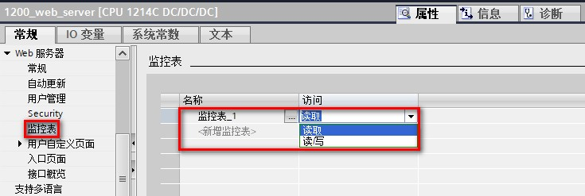
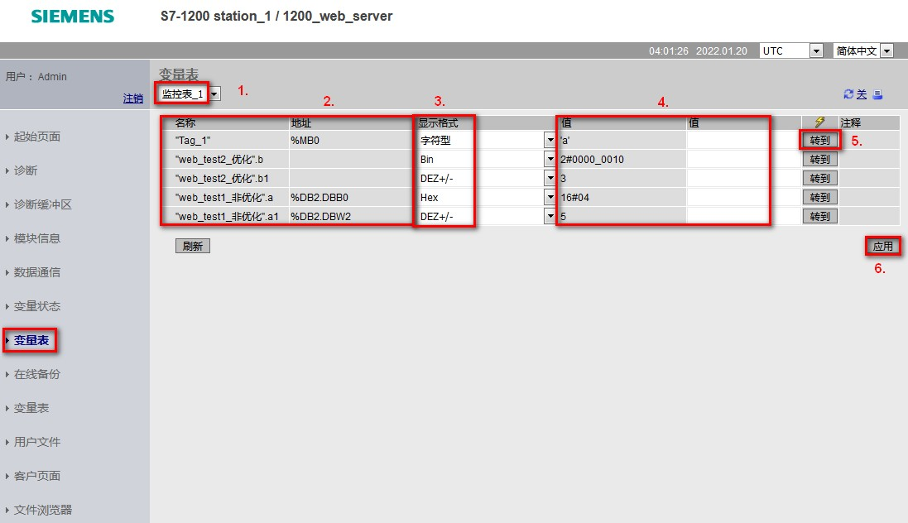

组态Web服务器监控表：

图 1.Web 服务器组态监控表
在监控表页面，可以选择已组态好的监控表，根据拥有的权限，监视或者修改变量的数值，如图 2 所示。

图 2.监控表
图中标注 1 处，切换要监控哪个监控表的变量；
图中标注 2 处，显示监控表包含的变量；
图中标注 3 处，切换显示格式；
图中标注 4 处，监视值和修改值；
图中标注 5 处，点击转到按钮，可以单独修改某个变量；
图中标注 6 处，点击应用按钮，可以同时修改多个变量